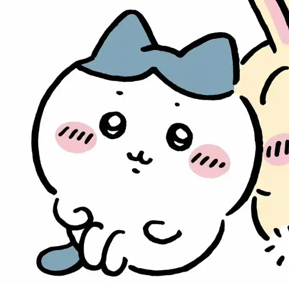
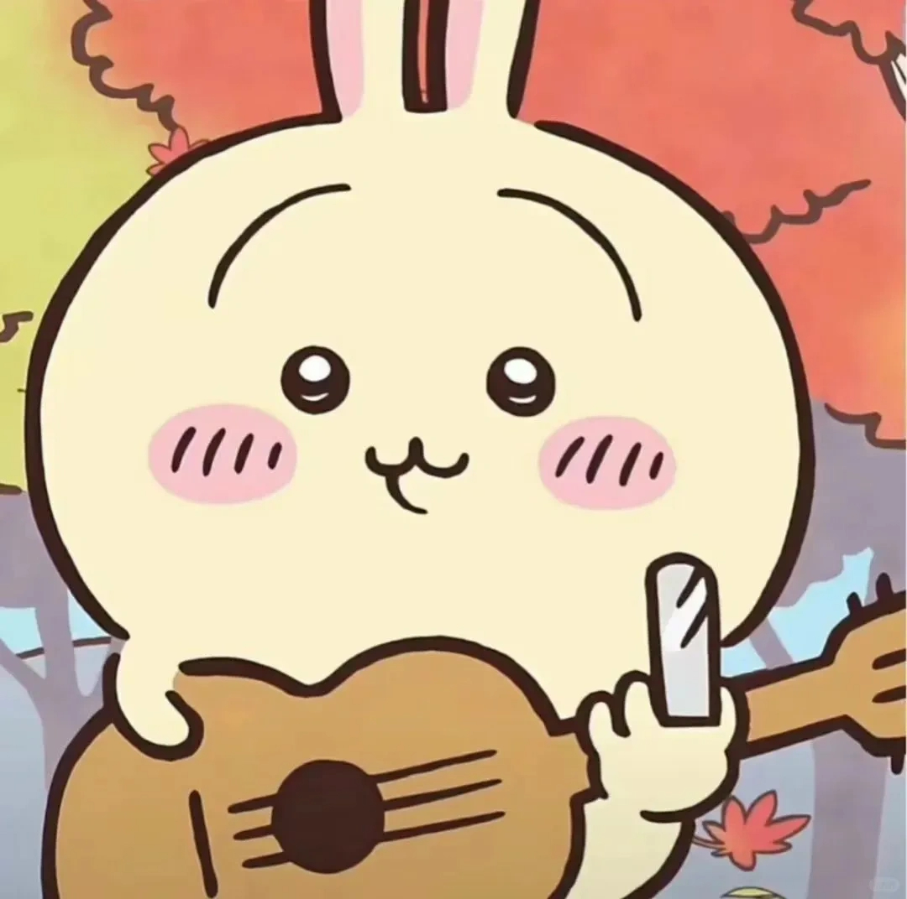
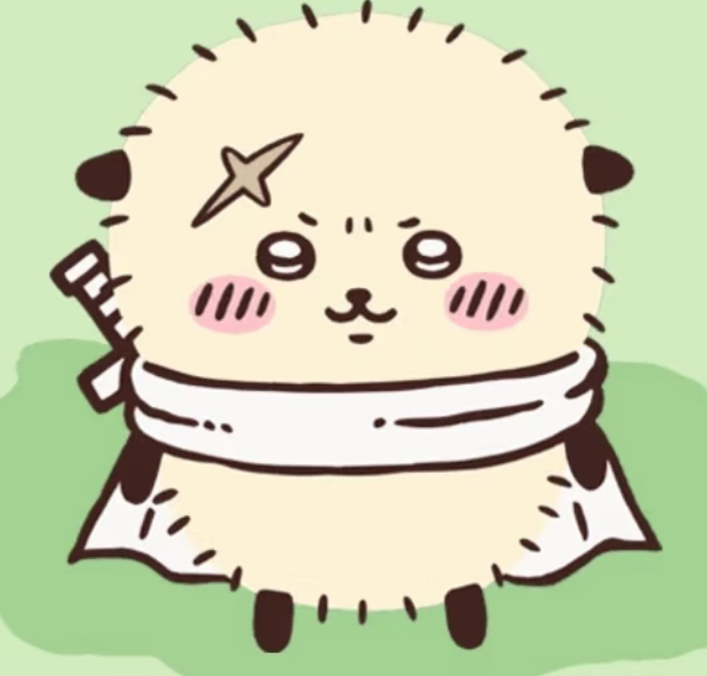
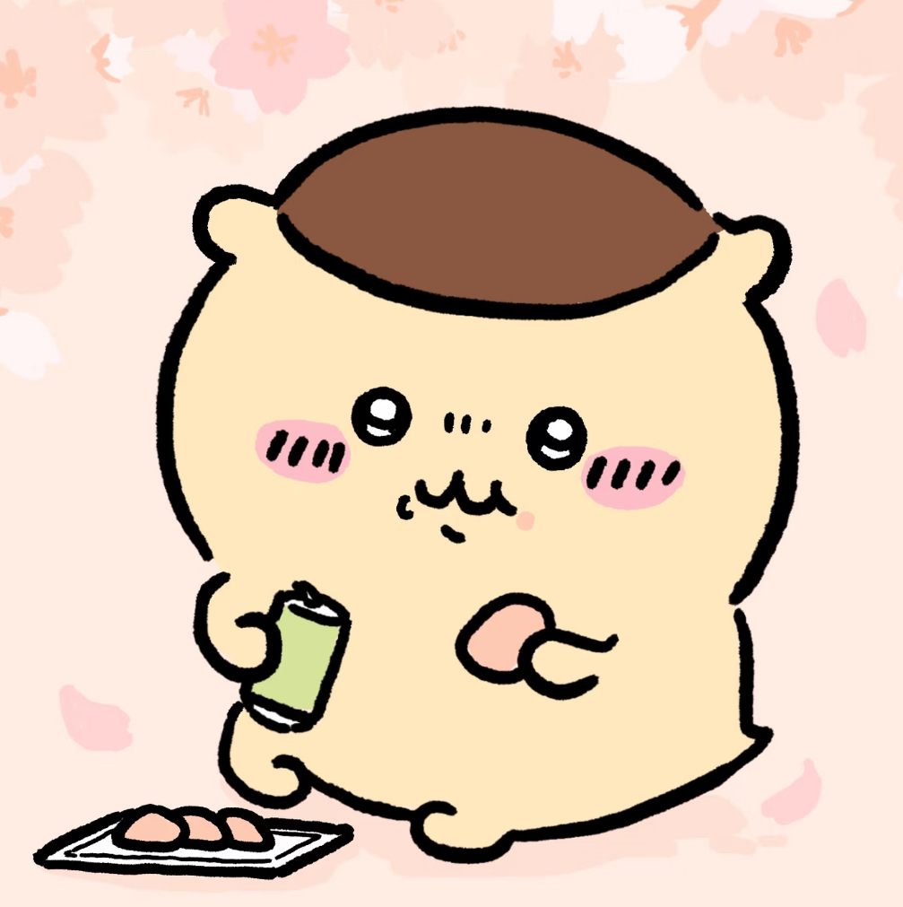
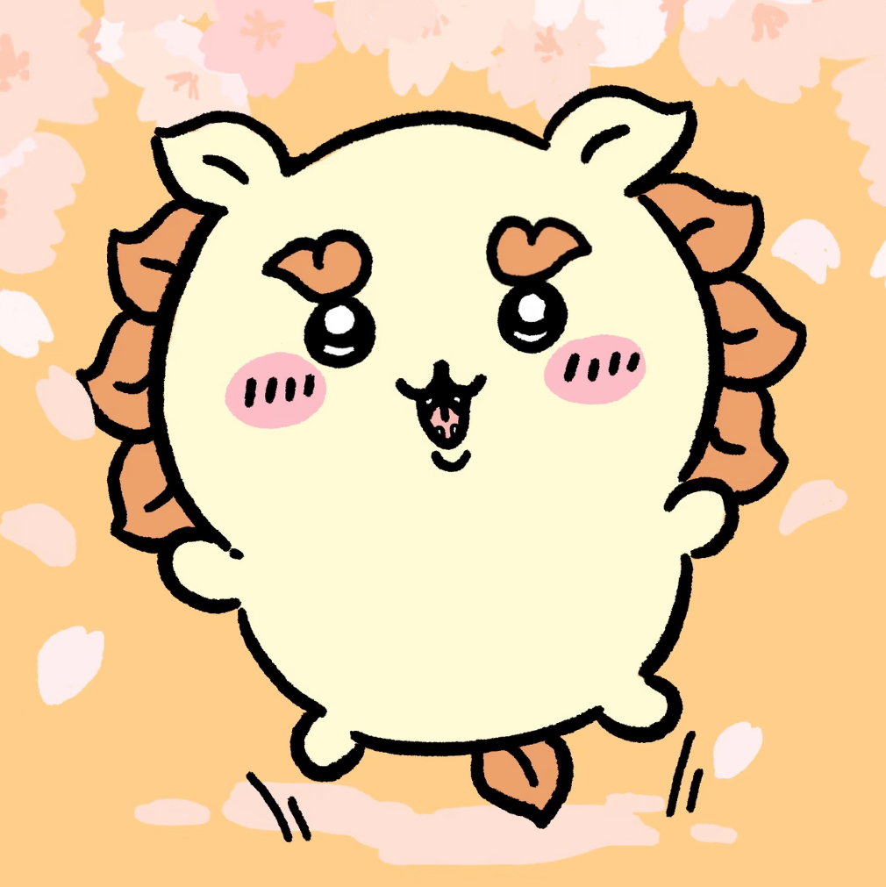
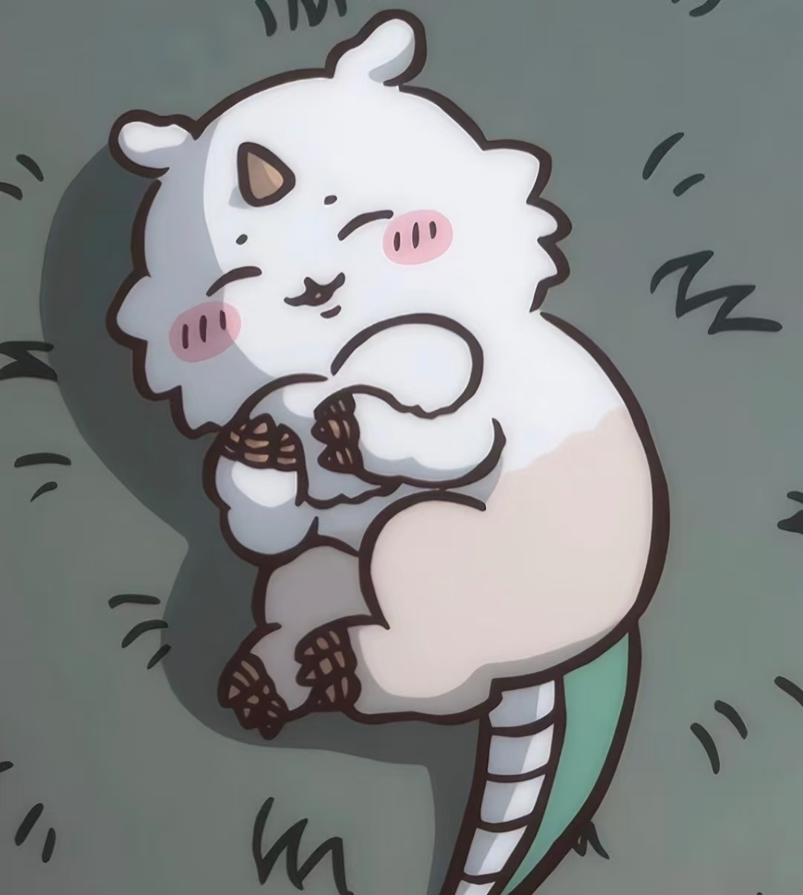
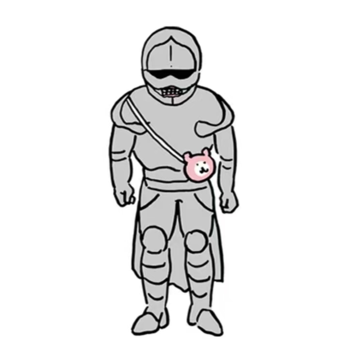

🌟 全角色介绍 🌟
吉伊卡哇（ちいかわ）
本作主角，胆小心软但骨子里很坚韧，十分珍视哈奇瓦力、乌萨奇两位挚友，再难的事都会咬牙努力坚持。

哈奇瓦力（ハチワレ）
元气小白熊，性格乐天开朗，运气常常很差却从不消极，永远热情对待生活，是吉伊最好的伙伴。

乌萨奇（うさぎ）
活力小兔子，擅长弹吉他，古灵精怪行动力拉满，总带着小伙伴去体验各种新奇冒险。
莫莫咖/飞鼠（モモンガ）
以飞鼠为原型，由于“モモ”有桃子的意思，因此也曾以嘴衔桃子的形象出场。
古本/螃蟹酱（カニちゃん）
原型是鼹鼠，旧书店的老版，喜欢看书，和莫莫咖成为朋友后面貌被描绘出来，头戴莫莫咖送的发箍。

海獭前辈（ラッコ）
帅气可靠的前辈，实力强大有担当，很照顾后辈们，行事稳重，是大家很信赖的强者。

栗子馒头（栗まんじゅう）
佛系慵懒的馒头角色，爱吃零食，性格温和散漫，没有什么烦恼，日常就是悠闲吃喝度日。

狮萨（シーサー）
活泼热血小狮子，元气满满爱热闹，性格直率热情，喜欢蹦蹦跳跳，活力永远用不完。
大强（でかつよ）
能力强大但性格胆怯善良，遇到危机时会以音速逃离现场，并习惯向流星许愿。

那孩子（アノコ）
在大型讨伐中遭遇的巨大战斗奇美拉，有点怕青蛙。

手工铠（ポシェットの鎧さん）
以制作售卖小挎包和睡衣为职业，虽受上司劝阻仍坚持支持吉伊卡哇。
超级可口超人
深受角色们喜爱的英雄偶像，是吉伊的偶像。
流星
被看做愿望之星，出现在夜晚的天空，为角色们提供一个倾诉愿望的出口。